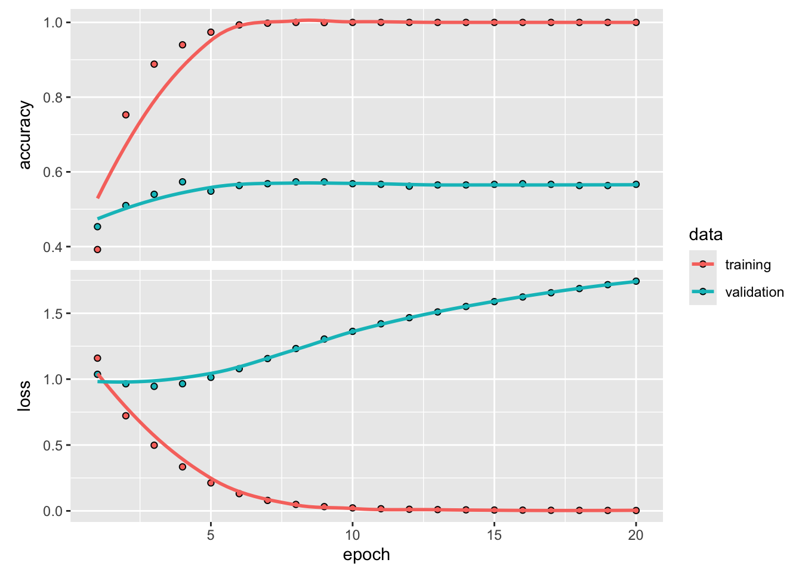
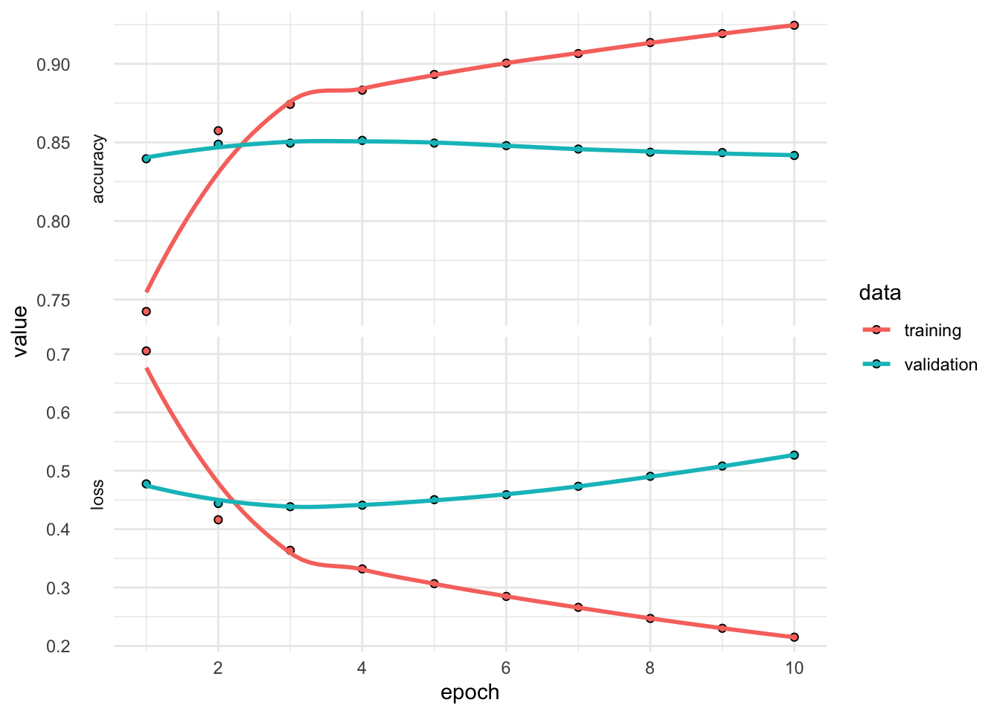
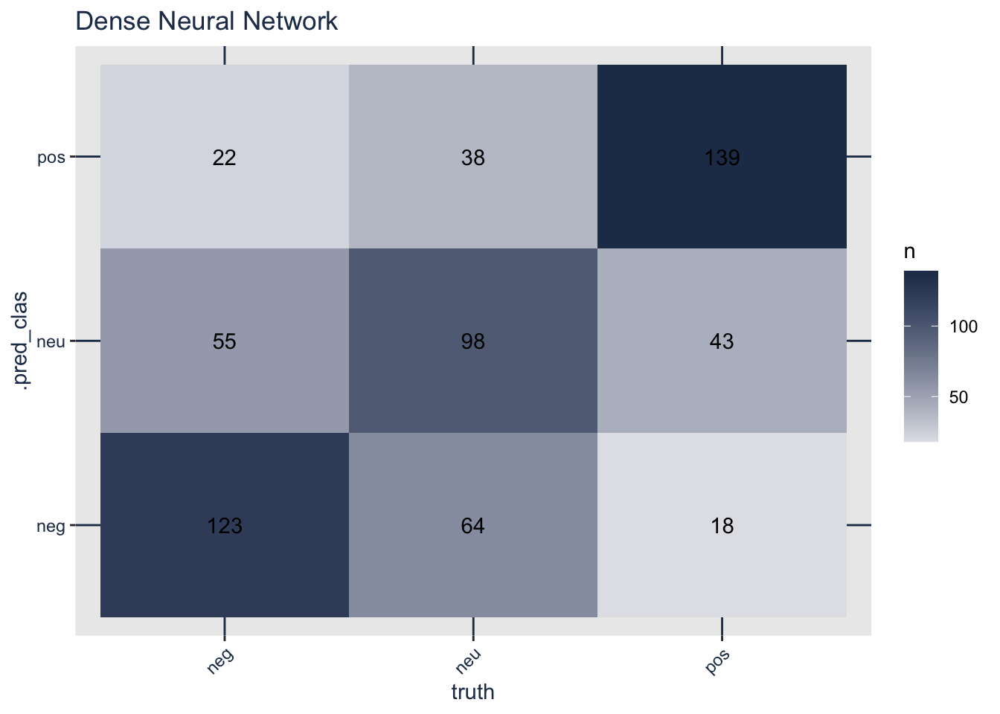

library(tidyverse)
library(tidymodels)
library(textrecipes)
conflicted::conflict_prefer("filter", winner = "dplyr")
load("../data/movie_reviews.Rdata")26 Полносвязные нейросети
26.1 Пакеты и виртуальное окружение
# create environment
library(keras3)
library(tensorflow)
library(reticulate)
virtualenv_create("r-reticulate", python = "3.10")virtualenv: r-reticulatevirtualenv_install("r-reticulate", c("tensorflow", "keras"))Using virtual environment 'r-reticulate' ...use_virtualenv("r-reticulate")
py_config()python: /Users/olga/.virtualenvs/r-reticulate/bin/python
libpython: /Users/olga/.pyenv/versions/3.9.19/lib/libpython3.9.dylib
pythonhome: /Users/olga/.virtualenvs/r-reticulate:/Users/olga/.virtualenvs/r-reticulate
version: 3.9.19 (main, Apr 24 2024, 22:13:14) [Clang 13.0.0 (clang-1300.0.29.30)]
numpy: /Users/olga/.virtualenvs/r-reticulate/lib/python3.9/site-packages/numpy
numpy_version: 1.26.4
keras: /Users/olga/.virtualenvs/r-reticulate/lib/python3.9/site-packages/keras
NOTE: Python version was forced by use_python() functionУбедимся, что все работает.
tf$constant("Hello TensorFlow!") tf.Tensor(b'Hello TensorFlow!', shape=(), dtype=string)26.2 Данные
Функция initial_validation_split() создает случайное разделение данных на три части: обучающую (training set), валидационную (validation set) и тестовую (testing set) выборки. Функции training(), validation() и testing() позволяют извлекать соответствующие подмножества данных после разбиения.
set.seed(11032025)
data_split <- reviews |>
mutate(sentiment = as.factor(sentiment)) |>
initial_validation_split(strata = sentiment)
data_split<Training/Validation/Testing/Total>
<1800/600/600/3000>data_train <- training(data_split)
data_validate <- validation(data_split)
data_test <- testing(data_split)Разделим обучающую выборку на 5 фолдов для перекрестной проверки.
# folds
set.seed(11032025)
folds <- vfold_cv(data_train, strata = sentiment, v = 5)
folds26.3 Препроцессинг: BOW
library(stopwords)
stopwords_ru <- c(
stopwords("ru", source = "snowball"),
stopwords("ru", source = "marimo"),
stopwords("ru", source = "nltk"))
# уберем повторы и упорядочим по алфавиту
stopwords_ru <- sort(unique(stopwords_ru))Мы начнем с того же рецепта, который использовали в прошлый раз. Каждая рецензия рассматривается как “мешок слов”. Число признаков снижено за счет стемминга, удаления цифр, латинских букв, а также стопслов. Снова установим максимальное значение признаков на 1000.
bow_rec <- recipe( ~ review, data = data_train) |>
step_mutate(review = stringr::str_remove_all(review, "\\d+")) |>
step_mutate(review = stringr::str_remove_all(review, "[A-Za-z]")) |>
step_tokenize(review) |>
step_stopwords(review, custom_stopword_source = stopwords_ru) |>
step_stem(review, options = list(language = "russian")) |>
step_tokenfilter(all_predictors(),
max_tokens = 1000,
min_times = 2) |>
step_tfidf(review) |>
step_zv(all_predictors()) |>
step_normalize(all_predictors())Функция prep() вычисляет параметры всех шагов обработки, таких как токенизация, удаление стоп-слов или преобразование в bag-of-words. Функция bake() применяет подготовленный рецепт к обучающим данным.
# prep and bake
bow_prep <- prep(bow_rec)
train_bow_baked <- bake(bow_prep,
new_data = NULL,
composition = "matrix")valid_bow_baked <- bake(bow_prep,
new_data = data_validate,
composition = "matrix")26.4 Перекодирование меток
sentiment_train <- data_train |>
pull(sentiment) |>
as.factor() |>
as.integer()Функция to_categorical() из пакета {keras} используется для преобразования вектора классов (представленного в виде целых чисел) в бинарную матрицу классов (one-hot encoding). Функция принимает вектор целочисленных меток классов, например, {0, 1, 2, 3}, и преобразует его в one-hot матрицу, где каждый класс кодируется бинарным вектором.
Пример:
[,1] [,2] [,3]
[1,] 1 0 0 # Класс 0
[2,] 0 1 0 # Класс 1
[3,] 0 0 1 # Класс 2
[4,] 0 1 0 # Класс 1
[5,] 1 0 0 # Класс 0Здесь:
- Каждая строка соответствует одному образцу.
- Каждый столбец – это конкретный класс.
- 1 стоит в позиции индекса класса, остальное –
0.
Эта функция используется в нейронных сетях (Keras, TensorFlow), потому что выходной слой softmax ожидает one-hot представление меток классов.
sentiment_train <- keras3::to_categorical(sentiment_train-1, num_classes = 3)
head(sentiment_train) [,1] [,2] [,3]
[1,] 1 0 0
[2,] 1 0 0
[3,] 1 0 0
[4,] 1 0 0
[5,] 1 0 0
[6,] 1 0 0Теперь проделаем то же самое для валидационного набора.
sentiment_valid <- data_validate |>
pull(sentiment) |>
as.factor() |>
as.integer()
sentiment_valid <- keras3::to_categorical(sentiment_valid-1, num_classes = 3)26.5 DNN: BOW
bow_model <- keras3::keras_model_sequential() |>
layer_dense(units = 64, activation = "relu") |>
layer_dense(units = 64, activation = "relu") |>
layer_dense(units = 3, activation = "softmax")
bow_modelModel: "sequential"
┏━━━━━━━━━━━━━━━━━━━━━━━━━━━━━━━━━━━┳━━━━━━━━━━━━━━━━━━━━━━━━━━┳━━━━━━━━━━━━━━━┓
┃ Layer (type) ┃ Output Shape ┃ Param # ┃
┡━━━━━━━━━━━━━━━━━━━━━━━━━━━━━━━━━━━╇━━━━━━━━━━━━━━━━━━━━━━━━━━╇━━━━━━━━━━━━━━━┩
│ dense (Dense) │ ? │ 0 (unbuilt) │
├───────────────────────────────────┼──────────────────────────┼───────────────┤
│ dense_1 (Dense) │ ? │ 0 (unbuilt) │
├───────────────────────────────────┼──────────────────────────┼───────────────┤
│ dense_2 (Dense) │ ? │ 0 (unbuilt) │
└───────────────────────────────────┴──────────────────────────┴───────────────┘
Total params: 0 (0.00 B)
Trainable params: 0 (0.00 B)
Non-trainable params: 0 (0.00 B)bow_model |>
compile(
optimizer = "adam",
loss = "categorical_crossentropy",
metrics = c("accuracy")
)
bow_modelModel: "sequential"
┏━━━━━━━━━━━━━━━━━━━━━━━━━━━━━━━━━━━┳━━━━━━━━━━━━━━━━━━━━━━━━━━┳━━━━━━━━━━━━━━━┓
┃ Layer (type) ┃ Output Shape ┃ Param # ┃
┡━━━━━━━━━━━━━━━━━━━━━━━━━━━━━━━━━━━╇━━━━━━━━━━━━━━━━━━━━━━━━━━╇━━━━━━━━━━━━━━━┩
│ dense (Dense) │ ? │ 0 (unbuilt) │
├───────────────────────────────────┼──────────────────────────┼───────────────┤
│ dense_1 (Dense) │ ? │ 0 (unbuilt) │
├───────────────────────────────────┼──────────────────────────┼───────────────┤
│ dense_2 (Dense) │ ? │ 0 (unbuilt) │
└───────────────────────────────────┴──────────────────────────┴───────────────┘
Total params: 0 (0.00 B)
Trainable params: 0 (0.00 B)
Non-trainable params: 0 (0.00 B)bow_history <- bow_model |>
fit(
x = train_bow_baked,
y = sentiment_train,
batch_size = 100,
epochs = 20,
validation_data = list(valid_bow_baked, sentiment_valid),
verbose = FALSE
)
bow_history
Final epoch (plot to see history):
accuracy: 1
loss: 0.002697
val_accuracy: 0.5617
val_loss: 1.828 plot(bow_history) 
bow_df <- as.data.frame(bow_history)
bow_history
Final epoch (plot to see history):
accuracy: 1
loss: 0.002697
val_accuracy: 0.5617
val_loss: 1.828 26.6 Препроцессинг: One-Hot
onehot_rec <- recipe( ~ review, data = data_train) |>
step_tokenize(review) |>
step_tokenfilter(review, max_tokens = 2000) |>
step_sequence_onehot(review, sequence_length = 400)# prep and bake
onehot_prep <- prep(onehot_rec)train_onehot_baked <- bake(onehot_prep,
new_data = NULL,
composition = "matrix")valid_onehot_baked <- bake(onehot_prep,
new_data = data_validate,
composition = "matrix")26.7 DNN: One-hot
dense_model <- keras_model_sequential() |>
layer_embedding(input_dim = 2001,
output_dim = 64) |>
layer_flatten() |>
layer_dense(units = 64, activation = "relu") |>
layer_dense(units = 3, activation = "softmax")
dense_modelModel: "sequential_1"
┏━━━━━━━━━━━━━━━━━━━━━━━━━━━━━━━━━━━┳━━━━━━━━━━━━━━━━━━━━━━━━━━┳━━━━━━━━━━━━━━━┓
┃ Layer (type) ┃ Output Shape ┃ Param # ┃
┡━━━━━━━━━━━━━━━━━━━━━━━━━━━━━━━━━━━╇━━━━━━━━━━━━━━━━━━━━━━━━━━╇━━━━━━━━━━━━━━━┩
│ embedding (Embedding) │ ? │ 0 (unbuilt) │
├───────────────────────────────────┼──────────────────────────┼───────────────┤
│ flatten (Flatten) │ ? │ 0 (unbuilt) │
├───────────────────────────────────┼──────────────────────────┼───────────────┤
│ dense_3 (Dense) │ ? │ 0 (unbuilt) │
├───────────────────────────────────┼──────────────────────────┼───────────────┤
│ dense_4 (Dense) │ ? │ 0 (unbuilt) │
└───────────────────────────────────┴──────────────────────────┴───────────────┘
Total params: 0 (0.00 B)
Trainable params: 0 (0.00 B)
Non-trainable params: 0 (0.00 B)dense_model |>
compile(
optimizer = "adam",
loss = "categorical_crossentropy",
metrics = c("accuracy")
)dense_history <- dense_model |>
fit(
x = train_onehot_baked ,
y = sentiment_train,
batch_size = 100,
epochs = 20,
validation_data = list(valid_onehot_baked, sentiment_valid),
verbose = FALSE
)plot(dense_history)
26.8 Предсказание
dense_res <- predict(object = dense_model,
x = valid_onehot_baked
)19/19 - 0s - 5ms/stephead(dense_res) [,1] [,2] [,3]
[1,] 0.9899594 0.005354058 0.004686453
[2,] 0.3758484 0.510795474 0.113356218
[3,] 0.9771895 0.000415861 0.022394525
[4,] 0.9713955 0.021642592 0.006962005
[5,] 0.6321248 0.336982816 0.030892473
[6,] 0.3736731 0.574162245 0.052164607factor_names <- tibble(levels = levels(data_train$sentiment),
.pred_clas = 1:3)
factor_namespred_clas <- apply(dense_res, 1, which.max)
head(pred_clas)[1] 1 2 1 1 1 2dense_res_tbl <- tibble(truth = data_validate$sentiment,
.pred_clas = pred_clas) |>
left_join(factor_names) |>
dplyr::select(-(.pred_clas)) |>
rename(.pred_clas = levels) |>
mutate(.pred_clas = as.factor(.pred_clas),
truth = as.factor(truth))
metrics(dense_res_tbl, truth = truth, estimate = .pred_clas)dense_res_tbl |>
group_by(truth, .pred_clas) |>
summarise(n = n()) |>
ungroup() |>
ggplot(aes(truth, .pred_clas, fill = n)) +
geom_tile() +
geom_text(aes(label = n)) +
scale_fill_gradient2(low = "#eaeff6", high = "#233857") +
theme(panel.grid.major = element_line(colour = "#233857"),
axis.text = element_text(color = "#233857"),
axis.title = element_text(color = "#233857"),
plot.title = element_text(color = "#233857"),
axis.text.x = element_text(angle = 45, hjust = 1)) +
ggtitle("Dense Neural Network")`summarise()` has grouped output by 'truth'. You can override using the
`.groups` argument.